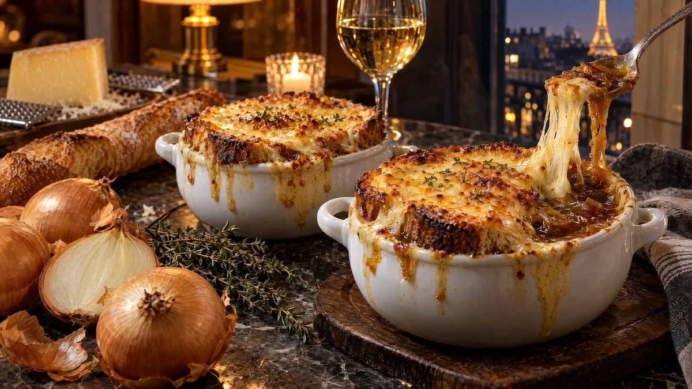

RESTFEST · RECEPTSoppa
Fransk löksoppa med gratinerade ostkrutonger
Sex gula lökar, gårdagens bröd och en bit lagrad ost. Löken steks långsamt tills den blir mörkt bärnstensfärgad och söt som marmelad, och kokas sedan till en djup, glänsande buljong. Ovanpå flyter brödskivor under ett bubblande, gyllene ostlock. En parisisk klassiker, gjord på kökets billigaste råvara.
- Förberedelse
- 15 min
- Tillagning
- 75 min
- Portioner
- 4
- Nivå
- Medelsvårt
 Det här behöver du
Det här behöver du
JÄMFÖRT MED DIN KYL
Tryck på + vid det du behöver köpa.
Soppa
Ostkrutonger
Gör så här
- Skala lökarna, dela dem på mitten och skiva dem tunt, ca 3 mm.
- Smält smöret med oljan i en stor gryta med tjock botten på medelvärme. Lägg i löken, socker och salt och rör om.
- Låt löken steka på medellåg värme i 45–50 minuter. Rör var femte minut och skrapa upp det bruna från botten. Löken blir först mjuk, sedan gyllene och till sist djupt brun. Fastnar den, häll i en skvätt vatten och skrapa loss. Ta inte genvägar med hög värme, då bränns löken i stället för att karamelliseras.
- Strö mjölet över löken och rör i 1 minut. Häll i vinet och låt det koka ihop under omrörning.
- Tillsätt vatten, buljongtärningar, soja, lagerblad och timjan. Låt sjuda utan lock i 20 minuter. Ta upp lagerbladet och timjanstjälkarna och smaka av med peppar, salt och vinäger.
- Sätt ugnen på grill, högsta värme. Bred lite smör på brödskivorna och rosta dem i en torr stekpanna tills de är gyllene.
- Fördela soppan i 4 ugnsfasta skålar och ställ dem på en plåt. Lägg 1–2 brödskivor i varje skål och täck med riven ost, gärna ända ut till kanterna.
- Gratinera högt upp i ugnen i 3–5 minuter, tills osten bubblar och har fått gyllenbruna fläckar. Stå kvar vid ugnen.
Dekoration och servering
- Låt lite ost rinna över skålens kant, det är så den ska se ut.
- Strö över några timjanblad och nymald svartpeppar.
- Ställ skålarna på små tallrikar med en servett, de är mycket heta.
- Har du inga ugnsfasta skålar, gratinera brödet med osten på en plåt och lägg det på soppan precis före servering.
- Soppan blir ännu godare dagen efter och går bra att frysa, utan bröd och ost.
Mått och ugnstemperaturer
Måtten är svenska (dl, msk, tsk, krm). Ugnstemperaturerna gäller vanlig ugn med över- och undervärme; med varmluft, sänk med 20 grader.